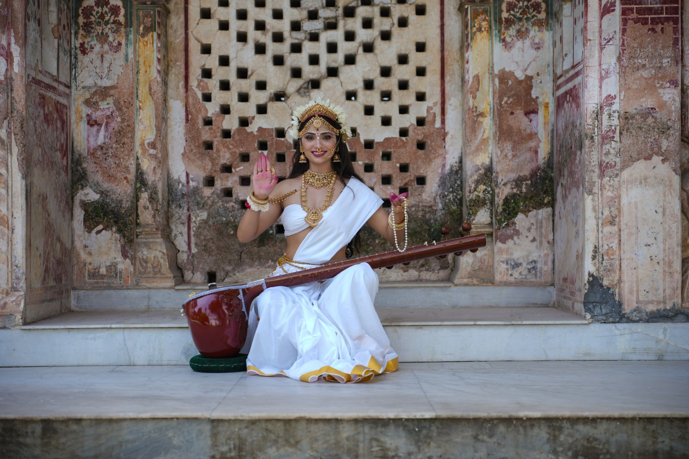

Case 1 · Ragam–Tanam–Pallavi · December Season 2025
The Seven-Beat Pallavi
The brief
The sabha’s main slot, and one instruction: end with a pallavi the hall would remember. The risk in a 7-beat pallavi is not the singer — it is the room. Lose the audience’s count during the neraval and the tani avartanam plays to a hall that has politely stopped listening.
Decisions
The pallavi line was composed in Shanmukhapriya and set to Misra Chapu (3 + 4), entering two aksharas after sam, so the cycle’s turn is audible from the first statement. Through the neraval the mridangam held a plain, repeating theka — no tani, no display — until the structure was in the hall’s ear. Three rehearsal calls with violin and mridangam were spent almost entirely on the two places the cycle turns. The kalpana swarams stayed in Shanmukhapriya rather than touring a ragamalika: one raga, asked to carry forty-five minutes.
Outcome
Forty-five minutes, held. The tani avartanam ran twelve minutes to a hall still counting. The sabha rebooked for the following season before the month was out; the secretary’s note on the concert is quoted on the home page.

- Venue
- Sabha hall, Mylapore
- Format
- RTP in a 2½-hr concert
- Team
- Voice, violin, mridangam, ghatam
- Cycle
- Misra Chapu · 7
- Status
- Rebooked